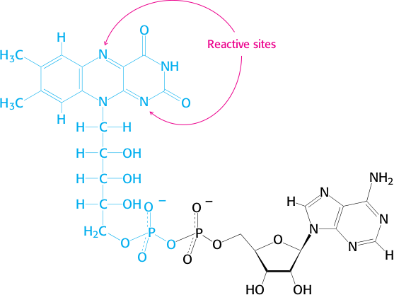

Redox Coenzymes
Oxidoreductase is the largest Enzyme Commission category, accounting for about half of all known enzymes. Three types of redox coenzymes are shown in Table 7.2: nicotinamides, quinones, and flavins. The nicotinamides transfer hydrides, which are hydrogen nuclei attached to a pair of electrons. The quinones — ubiquinone (UQ) and plastoquinone (PQ) transfer electrons strictly one at a time. The flavin nucleotides are bifunctional. They can carry out one-electron transport in one direction and two-electron transport (i.e., a hydride) in the other. Flavins can serve as coupling redox carriers between strict two-electron coenzymes (e.g., NADH) and single electron coenzymes (e.g., UQ).
NICOTINAMIDES
The nicotinamide nucleotides have both a niacin (nicotinamide) ring and an adenine ring (Figure 7.1). As with all redox cofactors, there must be an oxidized and reduced partner on each side of the reaction. There are two pairs of nicotinamide nucleotides: NAD+/NADH and NADP+/NADPH. The full structure illustrated at the top of the figure indicates the nucleotide rings in gold and the sugar rings in green. Only the nicotinamide portion functions in redox; the remainder of the molecule, symbolized in the figure as R, selectively binds theenzyme. The hydroxyl group of R indicated in yellow is either unmodified (NADH, NAD+) or esterified to a phosphate group (NADPH, NADP"). The extra phosphate provides discrimination between enzymes that use either NAD*/NADH or NADP*/NADPH, without affecting the electron transfer itself.

NAD+-assisted hydride extraction from an alcohol is illustrated in Figure 7.2. Electron flow from the neighboring oxygen atom initiates the movement of the electron pair from the alcohol onto the cofactor. Electron migration through the nicotinamide ring is driven by the positively charged nitrogen atom, an electron sink. The reaction products are the carbonyl compound and a proton. Nicotinamide nucleotides, like the adenine nucleotides, are mobile cofactors. For a steady-state conversion of alcohol to ketone in this example, there must be separate reactions that carry out re-oxidation of NADH at the same rate as the alcohol oxidation.
While we examined only the NAD+ reaction, reactions using NADP+ are chemically indistinguishable. There is an important biological distinction: the binding of distinct enzymes to the phosphorylated versus nonphosphorylated nucleotides enables two separate redox poises - NAD+/NADH and NADP+/NADPH - to be maintained in the same cellular water space. For example, in the cytosol, these ratios differ by five orders of magnitude; yet their ratios under standard state conditions are identical.
UBIQUINONE
A second mobile cofactor in biochemistry is ubiquinone.
The structure shown in Table 7.2 is the portion that changes during the reaction. The very similar plastoquinone is missing only a methyl substitution in the ring and has nine repeating branched lipid segments instead of ten. The chemistry of ubiquinone and plastoquinone is identical. Generally, free radicals are more unstable than paired electrons in a molecule. The ability of ubiquinone to stabilize the free radical is due to the spreading out of electron density through the aromatic ring.
The sequence of reactions involving ubiquinone is illustrated in Figure 7.3 for the direction of reduction. The fully oxidized quinone is first reduced by one electron to a radical anion, in which one oxygen has a single unbound electron. The other oxygen has a full negative charge. Two protons accompany the addition of the second electron to form the fully reduced UQH,. The single electron donors (or acceptors when the coenzyme acts as a reductant) are redox-active metal ions, typically Fe2+/Fe3+, bound in chelates as we will discover in the chapters on oxidative phosphorylation (Chapter 11) and photosynthesis (Chapter 12). In these processes, ubiquinone or plastoquinone are mobile cofactors but are confined to the lipid portion of the mitochondrial or thylakoid membrane.
FLAVIN COENZYMES
Flavins are named for the family Flavius (“yellow-haired”), a series of three Roman emperors in the lst Century AD. The coenzymes and the proteins they are attached to have a bright golden yellow color. The flavins are prosthetic groups and stay fixed to their enzymes throughout the catalytic cycle. As a result, electrons donated to a flavin coenzyme must be removed to restore its original state. Consequently, a second, mobile cofactor must be associated with flavin-linked enzymes to remove the electrons.
FAD can exist in 3 forms:
oxidized: has no hydrogens at positions N1 and N5 (FAD)
reduced: has hydrogens at both positions N1 and N2 (FADH2)
intermediate semiquinone: has one hydride ion at one of the positions (FADH- radical)
The reactive part of FAD is its isoalloxazine ring, a derivative of the vitamin riboflavin (Figure 15.15). FAD, like NAD+, can accept two electrons. In doing so, FAD, unlike NAD+, takes up two protons. These carriers of high-potential electrons as well as flavin mononucleotide (FMN), an electron carrier similar to FAD but lacking the adenine nucleotide, will be considered further in Chapter 18.
Flavin structures are shown in Figure 7.4. FAD (flavin adenine dinucleotide) has both adenine and flavin nucleotides; the adenine nucleotide portion, like the one in NAD+ is exclusively for enzyme binding. FMN (flavin mononucleotide) is an abbreviated structure with only a ribose phosphate attachment. Also shown in Figure 7.4 is the active portion of the coenzyme.
The flavins are distinctive cofactors because the forward and reverse routes of redox reactions are asymmetric. As an illustration, consider the reactions shown in Figure 7.5. FADH, can be oxidized by donating single electrons, which can be accepted by metal ions. Figure 7.5A shows the sequential donation of two electrons with an intermediate radical. Protons are also released sequentially. Figure 7.5B shows the reduction of FAD by direct reaction with NADH. This process is initiated by extracting a proton from an enzyme side chain (illustrated simply as Enz-BH) and a movement of electron pairs through both the FAD and NADH rings, forming the products FADH, and NAD+.
A complete redox cycle involving FAD is presented in Figure 7.6A. In this example, the electron donor is a redox-active iron protein, represented simply as the iron ion itself. Two Fe3+ ions are reduced in sequence, converting FADH, to FAD with the simultaneous release of protons. The cycle is completed as FAD accepts a hydride from NADH. Overall, the